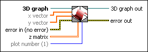

3D Surface VI
Owning Palette: 3D Graph Properties VIs
Requires: Base Development System (Windows)
Plots a simple surface from z matrix. The x and y vectors cause the surface to shift in relation to the x and y planes. This VI accepts one 2D array and the two optional 1D arrays.

 Add to the block diagram Add to the block diagram |
 Find on the palette Find on the palette |